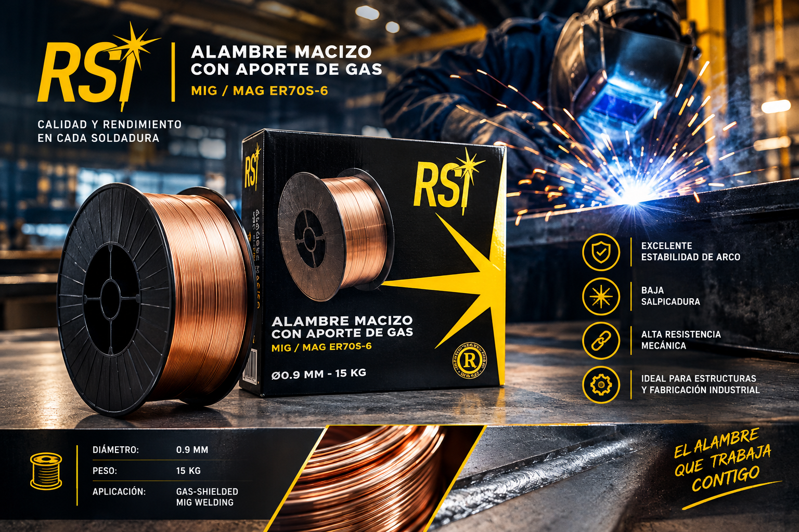

Consumibles de soldadura
Electrodos, alambres sólidos y alambres tubulares de alta calidad para la industria metálica. Respaldados por fabricantes líderes con más de 70 años de experiencia. Stock, trazabilidad y entrega confiable en Argentina y la región.
Electrodos para soldadura
Electrodos revestidos para soldadura por arco (SMAW). Amplia gama para aceros al carbono, baja aleación, inoxidables y aplicaciones especiales. Ideales para construcción, mantenimiento industrial y fabricación general.
Solicitar cotizaciónAlambres para soldadura
Alambres sólidos para procesos MIG/MAG y TIG. Excelente alimentación, bajo nivel de salpicaduras y propiedades mecánicas estables. Disponibles en diferentes diámetros según el requerimiento de producción.
Solicitar cotizaciónFundente para Soldadura
El fundente de soldadura protege el baño de soldadura contra la oxidación y la contaminación, asegurando cordones limpios y de alta calidad. Se utiliza en diversos procesos de soldadura, incluidos SMAW, FCAW y soldadura por arco sumergido. Sus aplicaciones abarcan la construcción, la industria naval y la manufactura, proporcionando uniones fuertes y confiables, esenciales para sectores críticos.
Solicitar cotizaciónMás de 500 tipos de consumibles disponibles
Presentaciones según producto y necesidad del cliente: bobinas de 15 kg, 125 kg, 250 kg y 500 kg. También disponibles en otras presentaciones bajo pedido.
Productos más utilizados

Alambre MIG ER70S
Alambre sólido para procesos MIG. Buena ductilidad y propiedades mecánicas estables.
Presentaciones: Bobinas 15 kg / 20 kg
Electrodo revestido E6013
Electrodo versátil para soldadura por arco. Apto para aceros de baja aleación.
Presentaciones: Botes 1 kg / 5 kg
Alambre tubular E71T-1C
Alambre flux-cored con aporte de gas. Alta productividad y buen control de proyección.
Presentaciones: Bobinas 15 kg
¿Necesitás un producto específico o en gran volumen?
Contamos con más de 500 tipos de consumibles y presentaciones a medida. Escribinos y te enviamos una cotización personalizada.
Solicitar cotización